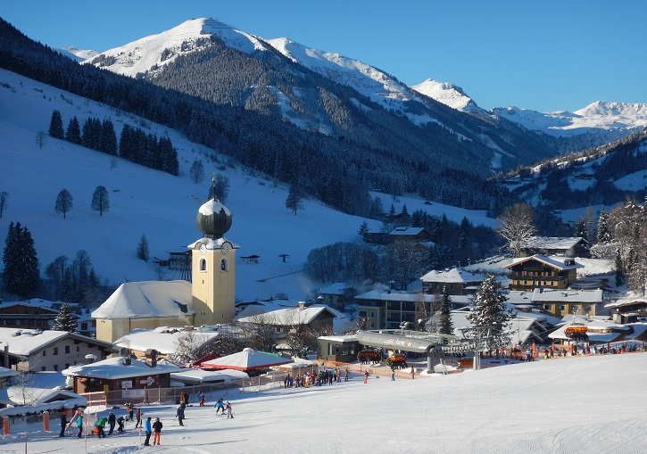
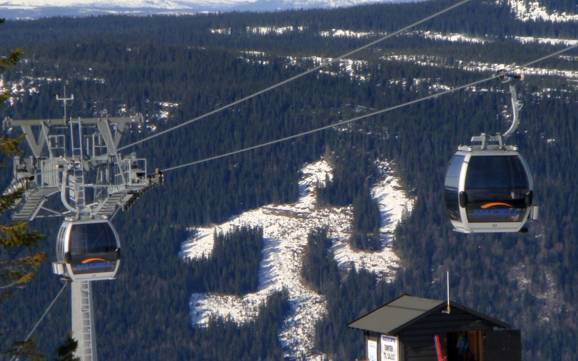

I went on a family ski trip to Saalbach, Austria for a week in January 2010. In total 25 of us went. It was a highly enjoyable but also challenging experience. Through the week I gradually progressed to the point where I entered a race for beginners at the end of the week and won.We stayed in a hotel in the centre of the village. Each night there were activities organised once the slopes were closed. Movie nights, Ice skating and Sleding were some of the activities occuring during the week.
In October 2012 I went on a family trip to New York during the week of hurricane sandy. It was an experience to say the least. We had to rush around to see all the tourist attractions in the first two days of our trip because the city would be on lock down for at least three days.We were lucky that our hotel was on the top half on New York because the lower half had no power. Many parts of the city was flooded and unreachable.We were also lucky that our flight back to Shannon wasn't cancelled because La Guardia airport was under water but thankfully we flew back from JFK airport.

In 2016 I went on a school ski trip to Lillehammer Norway. In total 106 people went on the trip with 96 students and 10 teachers. We were there for a week in total. We were split into groups based on previous experience. There was 7 groups with 5 beginner groups, 1 intermediate group and 1 experienced group. I myself was in the intermediate group because i had been skiing once previously. We went during March so we were there at the end of the skiing season, therefore it was far quieter than it would be usually. 